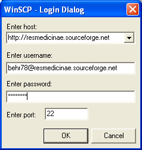

(1) Visit the following webpage and download the file "Installation Package WinSCP 1.0" . http://winscp.vse.cz/eng/download.php
I have downloaded and tested this version of WinSCP. Maybe you can try the newer version.
(2) After you have installed the program start WinSCP, a window similar to the following should appear.

(3) Enter the host http://resmedicinae.sourceforge.net
(4) Enter your username your_username@resmedicinae.sourceforge.net and your password.
These options will appear the next time automatically.